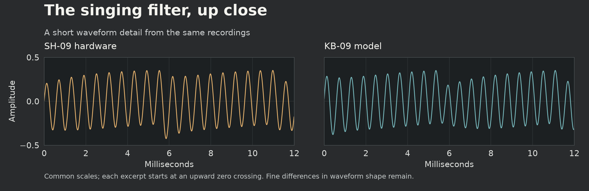
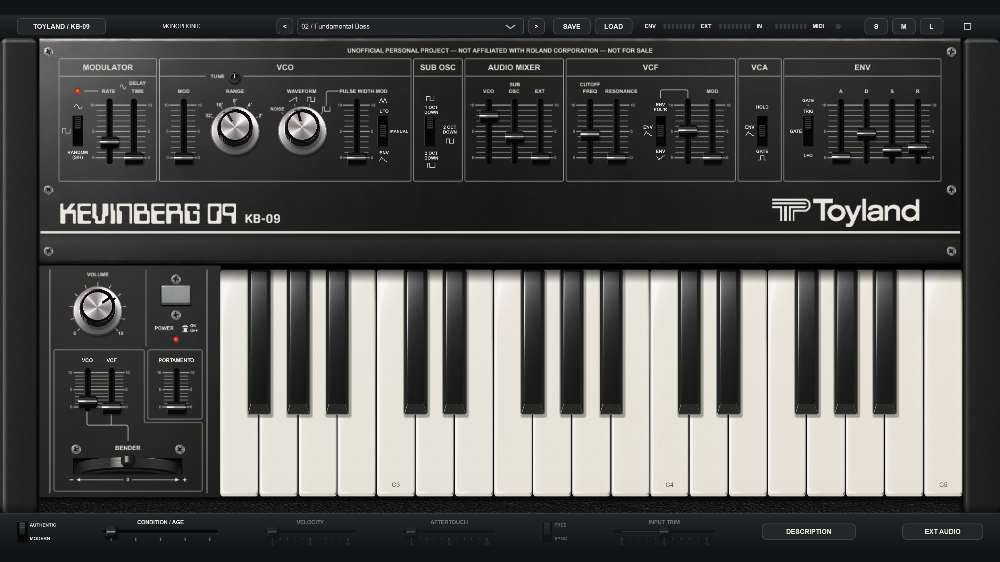
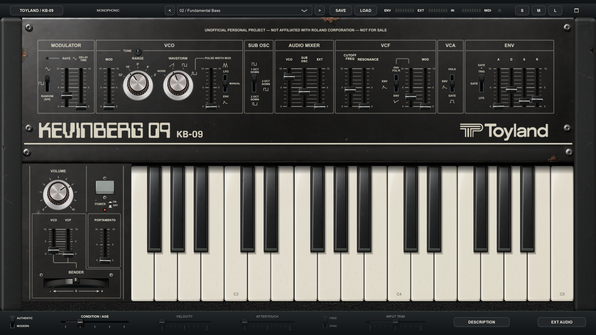
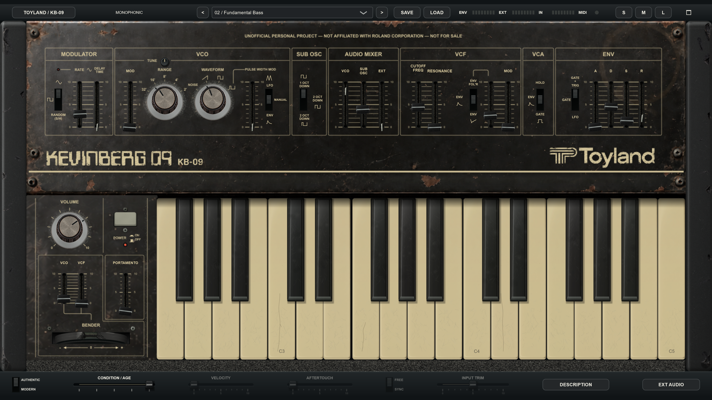
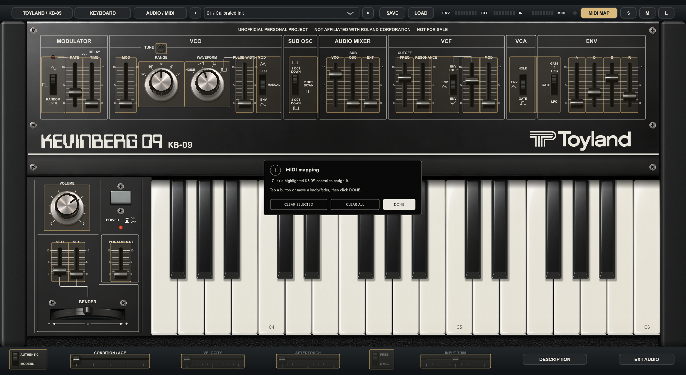

A PERSONAL SYNTHESIZER PROJECT
Toyland KB-09
A recreation of Kevin's Roland SH-09, with a few cool extras. Free for everyone, forever.
Fresh from the box or rescued from 1983? AGE takes the panel and circuit model on the same journey, from clean and calibrated to worn and full of character. Play basses and leads, or turn external guitar, drums and synths into a envelope filter: louder playing opens the filter further.
UNOFFICIAL PERSONAL PROJECT — NOT AFFILIATED WITH ROLAND CORPORATION — NOT FOR SALE
01 / DISCOVER KB-09
Discover KB-09
KB-09 recreates the character of Kevin’s Roland SH-09 in a hands-on software instrument. A main oscillator, sub oscillator, resonant low-pass filter and envelope shape everything from deep bass to singing leads and noise percussion. Its signal path follows the SH-09 circuit design; the digital model reproduces how those stages shape and interact with the sound.
Start with one of 24 factory sounds, then make it your own. AGE changes the instrument’s appearance and calibration, while External Input and its envelope follower let incoming guitar, drums or another synth control the filter. Play the standalone with a MIDI keyboard or the onscreen keys.
02 / INSIDE THE SOUND
How we built the sound engine
From a schematic to a playable instrument
We started with the SH-09’s circuit design and the way its controls connect. The main oscillator, divided sub oscillator and external input meet at the mixer; the resonant low-pass filter shapes that mixture, and the VCA controls its level. The envelope and LFO move those stages over time. Preserving those relationships gave KB-09 its starting structure.
Turning that structure into software meant choosing mathematical approximations for the oscillator waveforms, envelope curves, gain stages and filter. We did not simulate every transistor and component. The schematic told us how the stages connect; our equations and their calibration still had to reproduce how those stages respond and interact.
The sound engine processes at four times the host sample rate, with band-limited oscillator edges and filtered downsampling.
Inside the filter
The resonant filter was KB-09's biggest sound-design challenge. At high RESONANCE, the SH-09's filter becomes an oscillator in its own right. Add a steady VCO and sweep the filter slowly, and two sources of energy interact inside the circuit. Recreating that balance meant capturing a singing, stable resonance while retaining the movement and character of the hardware.
Our first approximation
Our earlier filter already had four nonlinear stages and a resonance feedback loop, so it could self-oscillate without a separate oscillator. But it gave all four stages the same saturation scale and used a generic soft limiter in the feedback path. Those choices made a working filter; they did not establish the right balance of internal levels and limiting for the SH-09.
What the oscillator-and-filter test revealed
The difficult case was a steady VCO feeding a self-oscillating filter while the filter swept slowly across the VCO’s harmonics. The model could be pulled too strongly toward the incoming oscillator’s pitch, producing plateaus that sounded like steps. With the VCO turned down, the filter swept smoothly. That distinction pointed us toward the interaction between input drive and resonance, rather than simply a stepped cutoff control. Increasing the processing rate alone did not remove the interaction.
Is anybody actually reading this?
Refining the approximation
We then gave the stages different nonlinear headroom scales, informed by the schematic’s interstage gain relationships. Headroom determines how much signal a stage can handle before its response bends into saturation. We also replaced the generic feedback limiter with a diode-like equation, reflecting the circuit’s resonance-limiting path. The important change was the balance between incoming oscillator energy and the filter’s own oscillation, rather than simply turning the input down or adding a cleaner tone alongside it.
The original Roland service schematic guides the four-stage filter and its resonance routing. KB-09 uses four nonlinear low-pass stages with instantaneous feedback, giving each stage an appropriate amount of internal signal headroom and controlling resonance with a separate nonlinear feedback limiter. The stages and limiter are solved together at each internal processing step. This helps the filter sustain its own tone as the incoming VCO changes, while preserving their interaction. Self-oscillation comes from the filter's feedback loop, with no separate sine generator or automatic volume correction.
Some corrections are explicitly software calibration. For example, the model applies a resonance-dependent pitch correction to compensate for the oscillation-frequency shift introduced by its nonlinear equations. That correction is not an extra component copied from the schematic. Likewise, the chosen headroom and limiter scales are engineering calibration parameters, not measurements of every BA662 and diode in Kevin’s instrument.
How we matched the SH-09 — recordings and waveform comparisons
The crucial test put a steady VCO into a self-oscillating filter while its pitch swept slowly past the VCO’s harmonics. The two signals interacted inside the filter, revealing whether its tone stayed steady, changed level or was pulled toward the incoming oscillator. We compared a collection of SH-09 and KB-09 recordings at different VCO mixer levels, alongside filter-only and oscillator-only recordings, captured at 96 kHz in 32-bit floating point. Listening, waveforms and frequency analysis guided the model toward the hardware’s balance of stable resonance and musical interaction. Matching pitch and relative signal levels made those comparisons more useful than copying slider positions alone.

Listening checks were paired with tests of tuning, ordinary patch levels, stability and processing cost across sample rates. The aim was a faithful, playable instrument: steady where the hardware is steady, expressive where its signals interact, and responsive under the fingers.

What the comparisons can tell us
These comparisons show one resonant setting, not every possible patch. Individual SH-09s vary with calibration and condition, and Kevin's instrument has decades of wear. His recordings provide a real musical reference; they are not assumed to define factory specifications. Natural beating and harmonic interaction remain part of the sound.
This is a circuit-informed approximation, not a component-calibrated recreation of the BA662 stages or their limiting diodes. AGE is a creative condition model, not measured decades of wear. See the original Roland service notes.
The schematic supplied the structure; testing and recordings exposed where our first approximation needed refinement. The result aims to follow the hardware’s behavior more closely without claiming that the software is a literal simulation of every component. KB-09’s optional velocity, aftertouch and tempo-sync controls, along with its creative AGE model, are additions to that foundation. See the model’s current evidence and limits.
Official downloads: open KB-09 Releases on GitHub, expand Assets if needed, and choose the ZIP named for your operating system. The automatically generated Source code archives are for building the project, not installing it. No GitHub account is needed to download the public release. The extracted synth and manual work offline.
03 / SETUP
Install & open
Requirements, installation and first-play instructions for Linux — UNVERIFIED.
No DAW is required. Each download includes a standalone app. The synth and manual work offline; internet access is only needed for downloads, update checks, bug reports and external links.
Standalone MIDI receive channel: in AUDIO / MIDI, enable your controller under Active MIDI inputs, then choose All channels (the default) or 1–16 under MIDI receive channel. This applies to every enabled MIDI input and is remembered between launches. MIDI Learn follows the same choice. It does not change sound presets or DAW plug-in routing.
Requirements
64-bit x86-64 (AMD or Intel), glibc 2.35 or later, with X11 or XWayland and ALSA or JACK. Intended for a current Arch desktop. This is a native standalone build; no DAW, Wine or plug-in installation is required. UNVERIFIED means playback on a real Arch desktop has not yet been confirmed.
A comfortable starting point
A four-core Intel Core i5-8250U or AMD Ryzen 5 2500U class processor or better, and 8 GB RAM. Strong single-core performance helps. On a PipeWire desktop, pipewire-alsa can provide ALSA routing; Wayland sessions need XWayland.
Allow at least 1 GB free for downloading, extracting and installing. An SSD and a 1920 × 1080 or larger display are recommended; smaller displays can use S. These are practical recommendations, not certified minimums.
Audio setup: begin at 44.1 or 48 kHz with a 256-sample buffer. Try 512 if audio crackles, or 128 if playing feels delayed and your computer has room to spare. Higher sample rates and multiple instances increase CPU load. KB-09 reports 128 samples of processing latency, in addition to the selected device buffer. Wired headphones or an audio interface are preferable to Bluetooth for responsive playing.
Extract and open
- Extract Toyland KB-09 for Linux (Standalone Only) - UNVERIFIED.zip completely into a permanent location.
- Open Start KB-09.sh. If it opens as text, open a terminal in the extracted folder and run
bash './Start KB-09.sh'. The launcher makes the included synth executable; no administrator access is needed. - Optionally run Create desktop shortcut.sh and allow launching if your desktop asks. Rerun it after moving the folder.
Standalone: play immediately
- Connect your MIDI controller by USB, or connect its MIDI OUT to your audio interface’s MIDI IN.
- Click AUDIO / MIDI. Select an audio output and enable your controller under Active MIDI inputs; scroll inside the settings if necessary. Close the settings and load 01 / Calibrated Init.
- Play your controller or click the onscreen keys. No DAW track needs arming. For the computer keyboard, enable KEYBOARD and play A W S E D F T G Y H U J K (C through the next C). Z / X shift octaves; keep the instrument focused. Typing in preset fields does not play notes.
KB-09 remembers enabled MIDI inputs and reconnects them when available. Change the selection in AUDIO / MIDI whenever needed. If the controller is missing, reconnect it. If it will not enable, close other apps using that MIDI port. Choose a shared audio device if another app occupies an exclusive driver.
Desktop shortcut — now or later
Run Create desktop shortcut.sh whenever you want a shortcut. If it opens as text, run bash './Create desktop shortcut.sh' in the extracted folder. Allow launching if your desktop asks. Keep the synth folder in place and rerun the script after moving it. Opening the standalone does not prompt to create a shortcut.
04 / FIRST SOUND
Start playing
Play your first sound
- Open the standalone app, or follow the Linux launch instructions.
- Choose 01 / Calibrated Init in the preset field along the top.
- Turn down your listening level, play a MIDI keyboard (enable the controller in AUDIO / MIDI), or enable KEYBOARD in the standalone app. You can also click KB-09's keys.
- Move CUTOFF FREQ to hear the sound darken or brighten. Add a little RESONANCE for a stronger filter peak.
- Try 02 / Fundamental Bass or 04 / Singing Lead, then save a sound of your own.
KB-09 is monophonic: it plays one note at a time, with the lowest held note taking priority. Overlapping notes and the envelope trigger switch shape its legato behavior. Click and hold an onscreen key, or hold a MIDI note, to see the key depress and darken. A small amber bar along the key's lower edge identifies the active note; other held keys remain shaded without a colored marker. The marks disappear when the keys are released.
Toyland KB-09 Standalone is a complete playable virtual synth. Choose your audio output and MIDI input in its audio/MIDI settings, then select a preset and play. It does not record a song or replace a DAW.05 / CHARACTER
Meet AGE
Choose the condition of your instrument.
CONDITION / AGE lives below the instrument. At 1 / Minty it selects the healthy calibration profile. Turn it up to explore a more played-in instrument, then turn it back whenever you like. AGE is saved with your sound and works in both Authentic and Modern modes.
Click a marked AGE position or drag its cap to select one of five conditions. Each appearance has one name:
The five AGE conditions
- Minty — fresh and calibrated.
- Seen Some Shit
- Vintage, Baby!
- Sold As-Is
- Fire Hazard — the most worn condition.
The five marked settings run from 1 to 5, with one appearance and name per setting. AGE is saved with your patch.
Inspired by Kevin's own aged SH-09, AGE changes both the synth's appearance and its circuit behavior.
What changes?
Appearance
Keys and printed legends yellow, keys become scuffed and uneven, and knobs lose their shine. Slider caps twist, lean and go missing. Dust gathers between the main-panel switch ridges and in the upper cheek joints. The screws gradually turn matte with mostly dark tarnish and a little rust; some heads become stripped. The side cheeks collect fine scratches, superficial scuffs and gouges along their outer edges and corners. Knob tops gather uneven grime around their edges. At Fire Hazard, the bender pointer breaks off. Silver trim dulls and pits without rusting. The bottom utility strip, including AUTHENTIC / MODERN and FREE / SYNC, and all dialogs keep their clean appearance at every AGE setting.
The controls continue to work through every condition. Lower AGE whenever you want to bring back the caps, intact bender and fresher panel.
Sound
AGE gradually shifts pitch calibration, filter tuning, resonance and envelope timing. The same setting gives the same condition each time, so it can be saved with a patch.
AGE is a creative condition control rather than a clock counting elapsed years. It does not add random crackles or make a worn key stop playing.
Try this
Save a favorite patch. Hold one note and move AGE slowly from fresh to worn. Compare the subtle sound changes, then explore the filter and envelope with AGE at a setting you like. Inspect the panel at L size, and load your saved patch whenever you want to return to the starting point.
06 / HANDS ON
Learn the panel



Drag sliders vertically; drag a knob vertically or horizontally. Hover or drag to read its value bubble. Most sound controls use a 0–10 display; TUNE displays cents in Authentic mode and semitones in Modern mode. Double-click a continuous control to return to its default. Click or drag the ridged switches, or click their adjacent labels. Focused switches also accept arrow keys, Home and End.
Click the gray POWER button to switch the instrument on or off. It stands tall when OFF and sits lower when ON; the red lamp below the POWER label lights when the synth is on. Switching it off mutes the sound and clears held notes. Play a fresh note after switching it back on.
| Section | What it does | A first experiment |
|---|---|---|
| MODULATOR | The low-frequency oscillator (LFO) moves pitch, filter or pulse width. Select sine, square or random/sample-and-hold; RATE sets speed: 0.2–25 Hz in Authentic, or 0.05–25 Hz in Modern FREE mode. The Modern extension affects only the lowest fifth of RATE travel; the remaining travel covers the same rates in both modes. DELAY TIME delays the sine modulation rise. | Add a little VCO MOD for vibrato. PWM uses the undelayed sine LFO. |
| VCO | The main oscillator selects noise, saw, square or variable pulse. RANGE changes octave. RANGE and WAVEFORM switch immediately between their marked positions, with no intermediate resting positions. TUNE spans ±65 cents in Authentic mode and ±12 semitones (one octave each way) in Modern mode; its center remains unchanged. Small labels near the bottom of the C-key top faces show the main oscillator’s octave at the current RANGE setting in both Authentic and Modern modes (middle C = C4 at 8′); they follow RANGE, while the incoming MIDI notes stay the same. Sub-oscillator notes sound below those labels. PULSE WIDTH MOD selects LFO, Manual or Envelope. | Select variable pulse, then raise PULSE WIDTH in Manual mode. |
| SUB OSC | A divider adds a square one octave down, square two octaves down, or narrow pulse two octaves down. | Raise SUB OSC in the mixer for a heavier bass. |
| AUDIO MIXER | Balances VCO, SUB OSC and the external audio input. | Lower VCO and raise SUB to hear the divider on its own. |
| VCF | The low-pass filter removes upper frequencies. CUTOFF sets brightness; RESONANCE emphasizes the cutoff region. High resonance makes the filter self-oscillate. MOD adds LFO motion; ENV adds positive envelope, inverted envelope or external-follower motion for envelope filtering. | Lower cutoff, add ENV and use a short DECAY for a plucked tone. |
| VCA | HOLD passes sound continuously and keeps the last sounding key visibly depressed; ENV shapes level with ADSR; GATE follows held notes. | Use ENV for expressive note shapes. HOLD can keep sounding after keys are released. |
| ENVELOPE | A = rise time; D = fall to sustain; S = held level; R = fade after release. Gate + Trigger re-attacks when the effective note changes; Gate supports legato; LFO provides cyclic triggering while a note is selected. | Increase A and R for a soft entrance and tail. |
| PERFORMANCE BAY | VOLUME sets output level; PORTAMENTO glides between pitches. The bender returns to center; its VCO and VCF sliders set separate sensitivities. POWER mutes the instrument. | Add portamento and overlap two notes. Play a fresh note after turning power back on. |
Finer control at low settings: PORTAMENTO, VCO MOD, VCF MOD and VCF ENV/FOL’R depth use a squared physical response. Half the slider travel gives one quarter of the effect amount, with the full range still available at the top. On-screen movement, MIDI Learn and the modulation wheel use the same response. Existing presets and DAW parameter automation retain their stored effect amounts; a recalled cap may sit higher under the new scale. Recorded MIDI CC performances use the new response and can sound different.
Play the filter itself
Lower VCO, SUB OSC and EXT to zero, set VCA to HOLD, lower VCF MOD and ENV, then raise RESONANCE until the filter sings. CUTOFF FREQ sets its pitch; the keyboard and VCF bender depth also move it. Start with a low listening level.
For the model’s development and recording comparisons, see How we built the sound engine.
Authentic & Modern
Authentic keeps the original-style routing and ignores the optional velocity, aftertouch, LFO tempo-sync and input-trim settings. Those controls dim. Modern enables them: velocity controls level, channel aftertouch opens the filter (up to three octaves at full pressure and AFTERTOUCH amount), FREE extends RATE down to one cycle every 20 seconds; SYNC locks RATE to musical grid divisions, and INPUT TRIM adjusts external input by ±24 dB. Return to Modern to use their retained settings.
Modern provides deeper maximum LFO modulation: ±36 semitones for VCO pitch and ±8 octaves for the VCF, compared with Authentic's ±12 semitones and ±5 octaves. These are software design ranges. The bender sensitivities are separate.
The header's ENV and EXT indicators show the synth envelope and external envelope-follower activity, respectively. EXT AUDIO opens a routing reminder in the same dialog style as the other KB-09 windows; choose OK to close.
07 / YOUR SOUNDS
Save your sounds
- Adjust the panel, including AGE and the Authentic/Modern choice.
- Click SAVE, choose a location you can find again and give the sound a name. KB-09 writes a
.kb09file. - To recall it, click LOAD and select that
.kb09file.
SAVE starts in Documents / Toyland KB-09 Presets, with writable copies of all twenty-four factory patches. Choose another folder whenever you like. LOAD starts in the folder where you most recently saved a patch, even after reopening KB-09. Loading a patch from elsewhere does not change that default.
Closing the standalone: choose Save, Don't Save, or Cancel. Use the arrow keys to switch the highlighted Save / Don't Save / Cancel choice, Enter to choose it, or Esc to cancel. Save lets you name a .kb09 file and opens that saved patch next launch. Don't Save starts the next launch with Calibrated Init. Cancel leaves the app open; canceling the save dialog or a failed save also leaves it open. If the saved startup file is moved or deleted, KB-09 falls back to Calibrated Init.
The loaded filename appears in the preset field. The twenty-four factory presets remain available; selecting one recalls its original settings. Save your edits before choosing another sound. Canceling a file dialog or rejecting an invalid preset leaves the current sound unchanged.
A preset saves the sound parameters, including AGE. It does not save held notes, the current envelope position, power or window placement. External audio routing belongs to your audio device or audio server setup.
What is in the factory bank?
01 Calibrated Init · 02 Fundamental Bass · 03 Hollow Pulse · 04 Singing Lead · 05 Resonant Steps · 06 Soft PWM · 07 Low Drum · 08 Noise Snare · 09 Random Circuit · 10 Filter Whistle · 11 Sub Drone · 12 External Filter · 13 External Follower · 14 Played-in Bass · 15 Modern Expression · 16 Modern Clockwork · 17 Iron Foundation · 18 PWM Heavyweight · 19 Roadworn Growl · 20 Resonant Rubber · 21 Pure Feedback · 22 Hot Feedback · 23 Sold As-Is Transmission · 24 Aftertouch Brass.
Start with Iron Foundation for a deep saw/sub bass, PWM Heavyweight for a moving pulse bass, or Roadworn Growl and Resonant Rubber for more filter bite. Pure Feedback and Hot Feedback use only the self-oscillating filter: VCO and SUB OSC are down; try CUTOFF, PORTAMENTO and the bender. Aftertouch Brass responds to velocity and channel pressure in MODERN mode.
The factory bank includes sounds from Minty through Fire Hazard. AGE is saved with each sound; change it freely to compare the same patch at different conditions.
External Filter and External Follower need routed audio. Random Circuit and Sub Drone use VCA Hold and can continue sounding without a held note.
08 / SEE THE DETAIL
A sharp, comfortable view
Use KB-09’s size buttons to choose a comfortable view. For blurry or low-resolution output, see Solve a problem.
Fits within about 65% of the available width and height.
Fits within about 90% of available width and height.
Requests the monitor's available work area.
The panel keeps its original proportions. Different screen shapes can leave dark margins. The maximize/restore button is at the top right.
Swipe up to fill the screen: in the standalone, drag KB-09's own top header upward to the top edge of the screen, then release to enter L. With touch, use the same upward drag. Pull the header down to restore the preceding size. This fills the available work area while keeping the panel's proportions; Use the standalone header for this gesture. Use S/M/L or the maximize/restore button if the host restricts dragging.
Keep the display at its native resolution and retain your desktop’s normal display scaling. Labels and drawn details stay sharp at the chosen size; photographic surfaces retain the detail of their source images.
09 / YOUR WORKSPACE
Standalone workspace
This Linux download runs directly as a standalone instrument. Choose audio inputs, outputs and your MIDI controller in AUDIO / MIDI. Use MIDI MAP to assign physical controls. For recording or external routing, connect the standalone to your audio interface or configured audio server.
For launch or routing trouble, see Linux setup fixes.
10 / BEYOND THE OSCILLATOR
Filter external audio
Envelope filter is the precise term. ENV FOL'R follows the loudness of incoming audio and uses it to move the low-pass cutoff: harder playing opens the filter further. This level-responsive effect is often called auto-wah. It differs from an LFO-driven wah, whose movement follows the modulator rather than your playing.
The standalone can process audio from the input selected in AUDIO / MIDI. That source passes through the mixer, filter and amplifier.
- Route an audio source to the instrument's External Input.
- Choose 12 / External Filter. It lowers the oscillators, raises EXT and uses VCA Hold, so no MIDI note is needed.
- Adjust CUTOFF FREQ and RESONANCE.
- Try 13 / External Follower: louder input opens the filter for an envelope-filter effect that responds to the input’s loudness. Adjust the VCF ENV amount and the source level.
For envelope filtering, the follower listens before the EXT mixer slider. Lowering EXT can make the source quieter while its filter modulation remains active. The follower does not trigger ADSR or open the VCA; use Hold for continuous processing. Stereo input is averaged to mono, so opposite-polarity channels can cancel. Output is mono duplicated to stereo.
The same envelope-follower idea appears in the original SH-09 owner's manual (external-instrument examples). KB-09 brings that expressive idea into your software setup. Try short guitar chords or a drum loop, lower CUTOFF, add RESONANCE and raise ENV until each attack opens the filter.
In the standalone
Select the input connected to your source in AUDIO / MIDI and turn off Mute audio input only when the routing avoids feedback. Raise EXT, and choose External Filter or External Follower. Avoid sending the output back into its own input. Audio-server routing and MIDI playback on a real Arch desktop remain unverified.
11 / MAKE IT YOUR OWN
Take a test drive
Try these ideas as you get to know the instrument. Tick them as you go, and print the guide if you want to keep your notes. The browser's checkboxes reset when you reload.
Session notes
Date: ____________________ Audio device / setup: ____________________
Preset: ____________________ Favorite AGE: ____________________
Sounds, settings and ideas to return to:
Modern TUNE range
In MODERN mode, TUNE spans one octave down to one octave up (−12 to +12 semitones). Double-click for concert pitch at center. AUTHENTIC keeps the original ±65-cent fine-tuning range. The knob’s value bubble shows the effective pitch change.
Play VCO MOD from your mod wheel
Your controller’s modulation wheel (MIDI CC1) controls VCO MOD in both AUTHENTIC and MODERN. It changes the amount of LFO pitch modulation; RATE and the selected waveform determine the movement.
The standalone uses pickup: after a manual edit or preset change, move the wheel to or through the fader’s position to take control without a jump. MIDI MAP assigns other knobs and buttons; assigning CC1 elsewhere replaces its normal VCO MOD function until cleared. The resulting fader setting is saved with the sound.
Map your controller in standalone

Click MIDI MAP, select a highlighted KB-09 control, tap a physical button or move a knob/fader, then click DONE. For a momentary button, release it before DONE; a toggle button needs only one press. When assigning a knob/fader to a switch, move through its middle so KB-09 recognizes direct positioning.
Buttons assigned to controls with three or more positions cycle one position per press. Knobs and faders select positions directly. Continuous controls use pickup: cross the onscreen position to take control without a jump. OPTIONS provides a correction for unusual button behavior.
CLEAR SELECTED removes one assignment; CLEAR ALL asks for confirmation before resetting them all. Mappings remember the MIDI channel and are saved between launches, separately from sound presets. They support absolute CC 0–119 on channels 1–16; set relative encoders to absolute mode. Pitch bend, notes and channel aftertouch keep their normal functions.
Enable DESCRIPTION for hover help.
Pitch-bender readout
Hover over or drag the spring-return bender to see its signed position, from -100% to +100%; center is 0%. The VCO and VCF depth faders determine the resulting pitch and filter movement, so the position is not a fixed semitone amount. Release the onscreen bender for a short, 35 ms return in AUTHENTIC mode at constant speed without easing. The pointer then makes one small visual recoil over 20 ms before resting at center; the sound reaches neutral at 35 ms without overshooting. MODERN returns immediately, retaining click-free audio smoothing. The spring duration is a playing approximation, not a measured SH-09 calibration. An external MIDI wheel moves the GUI bender and follows the controller’s own return messages. The wheel’s position is a performance control; the VCO and VCF depth faders set its sensitivities.
A little more control, a lot more playing
Hold SHIFT while dragging any knob, fader or the bender for ten-times finer adjustment. Release SHIFT to return to normal speed, even during a drag. AGE selects five marked conditions while dragging. Five cached appearances keep movement responsive; full visual detail returns on release. During automation, control positions and key feedback may stay at the last complete preview while you drag AGE; they return live on release. The four utility sliders have larger handles and grab areas. Faders move relative to where you grab them, so a fine adjustment will not jump to the pointer. The DESCRIPTION button in the bottom strip enables hover descriptions; it starts off and lights amber with DESCRIPTION ON when enabled. Hover over DESCRIPTION itself for help even when it is off. Value readouts work with DESCRIPTION off or on. Switches show their selected mode in a readable value box when hovered or adjusted; the box disappears after you leave or finish the adjustment.
VOLUME has an audio taper: quiet levels occupy useful knob travel, 0 mutes, and 10 is full output.
In Modern, choose FREE for the continuous 0.05–25 Hz LFO, or SYNC to follow the host tempo. RATE then selects 21 divisions, from four bars to 1/64-note triplets. Its value box displays the division. D means dotted (one-and-a-half times the straight duration); T means triplet (two-thirds). Bar labels assume 4/4; divisions are quarter-note beat durations and do not change with the host time signature. Without host tempo information the clock uses 120 BPM. Authentic always uses the original free rate, even with a saved SYNC setting.
The RATE lamp follows the LFO clock with clear half-cycle flashes below 8 Hz. At 8 Hz and above it becomes a steady glow that brightens with rate: this avoids misleading flicker when a screen cannot show each cycle. Modulation and LFO envelope triggering continue at the actual selected rate. SYNC follows tempo, not the host transport's bar position; stopping playback does not reset its phase.
The header's IN meter shows audio reaching the plug-in before the AUDIO MIXER's EXT fader and before stereo is folded to mono. ENV shows the synth envelope; EXT shows the external envelope follower. MIDI flashes when notes, pitch bend or other MIDI channel messages arrive. Enable DESCRIPTION and hover over an indicator for an explanation. IN activity with silence at the output means you should check EXT level, VCA mode and filter cutoff. Opposite-polarity stereo channels can light IN yet cancel in the mono signal.
Updates, without interruptions
Click TOYLAND / KB-09 in the top left to open the version and update menu. KB-09 asks whether you want automatic checks when its window opens, at least 90 days after the last successful automatic check. Manual checks do not postpone that schedule. If you are current, the message says You're up to date!
When an update is available, choose Show update instructions or Not now. Updates are optional. Installation is manual and usually takes a few minutes, depending on download speed. The instructions offer Open downloads and Copy instructions; both leave the instructions open. Copy them before closing KB-09. No update downloads or installs itself.
The official download is always on GitHub Releases. Under Assets, choose your operating system's ZIP; the Source code archives are for builders. No GitHub account is needed to download. If an older KB-09 version sends you to Google Drive, use this GitHub link to update manually.
Your saved presets and audio/MIDI preferences are kept. Save your current patch before closing KB-09. The normal preset folder is Documents/Toyland KB-09 Presets. Keep personal presets stored inside an old extracted download folder before replacing it.
- Download the Linux ZIP and extract it completely. Keep personal presets stored inside the old folder before replacing it.
- Save your patch and close KB-09.
- For a portable copy, replace the extracted folder and open the new standalone. If you move the folder, rerun Create desktop shortcut.sh.
- Confirm the new version under TOYLAND / KB-09.
Update-check preferences belong to your operating-system user account, apply across projects, and are not stored in presets. Failed automatic checks stay quiet. A failed manual check shows a retry message.
12 / QUICK FIXES
Solve a problem
In the standalone app, Ctrl+W closes the window through the same Save / Don’t Save / Cancel prompt as the close button.
I hear nothing
Load Calibrated Init, switch POWER on and play a fresh note. Check the selected audio output, MIDI input and VOLUME. Choose OK to close the EXT AUDIO dialog before playing. External presets need an audio source. In standalone, check audio/MIDI settings.
A sound keeps playing
VCA HOLD deliberately passes audio without a key. Try ENV or GATE, or load Calibrated Init. POWER mutes and clears note history; play a new note after turning it back on.
The display is blurry or low resolution
Keep your monitor at its native resolution and use KB-09’s S/M/L buttons for size. Reopen the app after a desktop scaling change. On Wayland, XWayland scaling can affect appearance; compare an X11 session if available. Include your desktop/session, scale and resolution in a bug report. Real desktop behavior remains unverified.
The footer or a control is outside the window
Choose S or M, reopen the editor and check the host's scaling setting. Try a fresh instance after saving the patch. If it persists, note desktop/session and display scale, monitor resolution and selected size when reporting the problem; a desktop can constrain a window’s requested dimensions.
Velocity, aftertouch, sync or input trim does nothing
Select Modern. Authentic deliberately ignores these optional controls. Aftertouch opens the filter; its slider sets the amount. Try a moderately low CUTOFF and preset 24 / Aftertouch Brass. It needs a controller that sends channel pressure, rather than polyphonic aftertouch. Onscreen mouse presses do not provide expressive aftertouch.
External audio is quiet or disappears
Confirm the intended audio input is selected in AUDIO / MIDI, raise EXT and use VCA Hold. Stereo sources with opposite-polarity channels cancel when folded to mono. In Modern, check INPUT TRIM. IN shows the incoming audio peak before mono folding and mixer level; EXT shows the external envelope follower. These meters do not promise that your output path is audible.
A MIDI control does not respond
Enable the controller in AUDIO / MIDI, then check its assignment in MIDI MAP. Continuous controls may need to cross the current position before taking over. Try KEYBOARD to distinguish MIDI setup from audio output trouble.
13 / FEEDBACK
Report a bug
Found a problem with KB-09 or this manual? Search GitHub Issues for an existing report, then open a bug report if needed. Posting requires a free GitHub account and an internet connection.
Include your KB-09 version, operating system, DAW and version (or Standalone), audio driver and device, and the exact steps, expected result and actual result. For Linux display problems, include the distribution, desktop and X11/Wayland session. Attach a screenshot or a short example if it helps.
Issues and attachments are public. Hide private information in screenshots and do not post passwords, license keys or private music sessions. Nothing is collected or sent automatically. If you are offline, save your notes and post them later.
Made a cool sound? Send me your presets! Share a preset and it might become a factory preset in the next update! Save the .kb09 file, put it in a ZIP and attach it to your submission. Tell me about the sound and how you would like to be credited. Submissions are public and require a free GitHub account.
PROJECT NOTES
About this project
KB-09 is an unofficial personal recreation of Kevin's Roland SH-09, using a circuit-informed digital model and artwork modeled after his own aged instrument. “Authentic” names the original-style routing mode; individual hardware instruments can differ. This project is not affiliated with Roland Corporation and is not for sale.
Free for everyone, forever. Make music, share it with your friends, and enjoy! You may use it to make and sell music, modify it, and share copies for free. Selling KB-09 or modified versions, charging for access, or including it as a paid software component is not permitted under the project license. Third-party components retain their own licenses. See Support/Licenses/KB-09-LICENSE.md in your download for the full terms.
The instrument has one voice, no onboard effects and no sequencer. The standalone includes MIDI mapping. It reports 128 samples of processing latency. Hardware Gate/CV sockets, alternate tunings and per-note expressive protocols are not provided. Use separate music software for recording, effects and arrangement.
Open User Manual.html in the main download folder. Use its Print / Save PDF button whenever you want a printable copy. Vendor documentation links need an internet connection.
Jaime Castillo
(AKA Spliff Roland)
1982–2022